[Flutter]
No 3rd party library available?
Let’s do our own!
Jacek Krasowski
What is Flutter
UI software development kit created by Google.
Timeline
2015 → First version of flutter framework was announced
2018, December → Flutter 1.0 - "stable" version.
2019, December → Flutter 1.12 (Current version)
Supported platforms:
- Android
- iOS
- Windows
- Mac
- Linux
- Google Fuchsia
- Web
Take it?
- Android & iOS apps from the same codebase (Less testing)
- The same app UI on older devices
- Flutter speeds up development (i.e. hot reload)
- Easy-to-learn development language for existing mobile developers
- Adding and publishing new libraries is fairly simple
- Community is growing
... or leave it?
In the real world it’s not that shiny yet… but it's getting better and better
- Libraries & support
- New language, new framework (con?)
- Designed for universal UI
Not many, huh?
Flutter project types:
- Application
- Package
- Module
- Plugin
Tools
IDEs

or
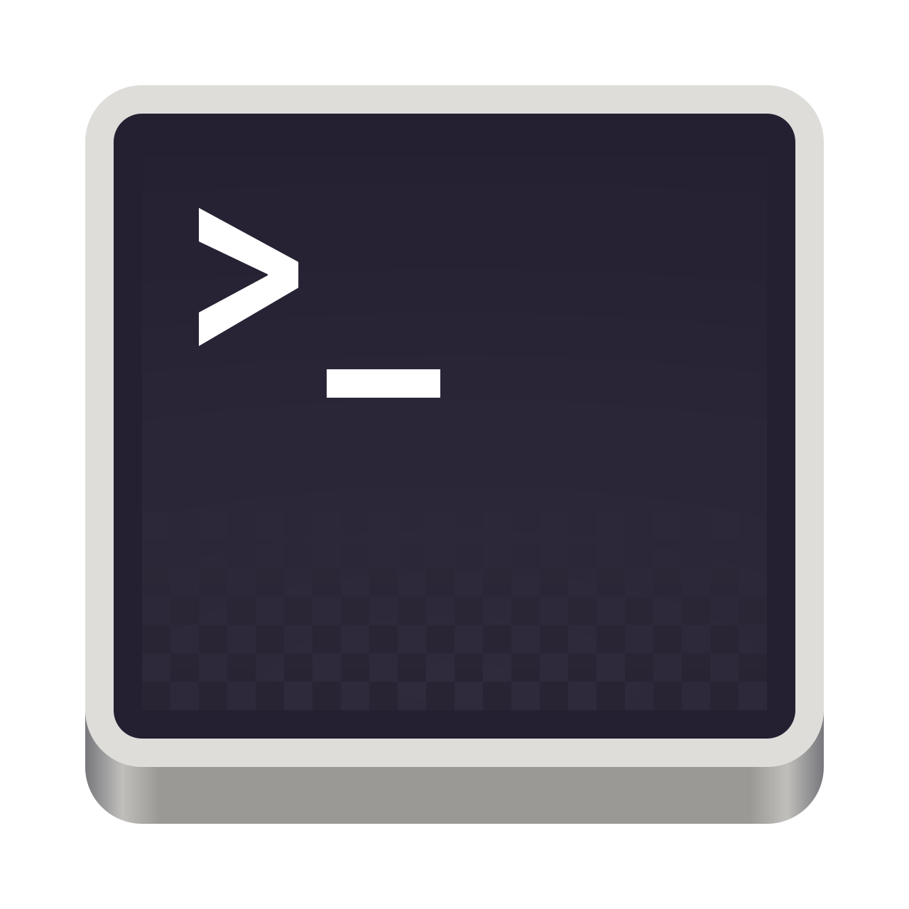Android Studio
File
New Flutter Project
Choose between Application/Package/Plugin/Module
Visual Studio Code
Start Command Palette [Cmd] [shift] [P]
Type: 'Flutter: New Project' (Only Flutter Application)
Terminal
All options available here
Let's do something serious now

Creation of new Plugin
flutter create \
> --org com.jk \
> --template=plugin \
> -i swift \
> -a kotlin \
> --androidx \
> --project-name battery_state_reader
> --description "Plugin reading battery state and level"
> BatteryStateReader
Plugin project overview
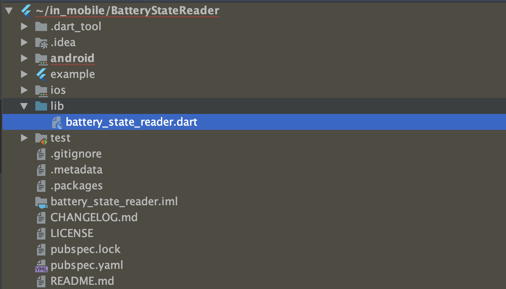Android project overview
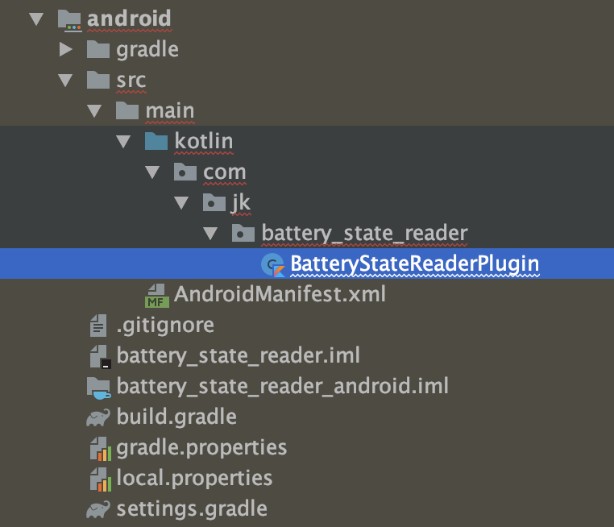iOS project overview
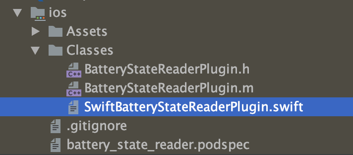Example project overview
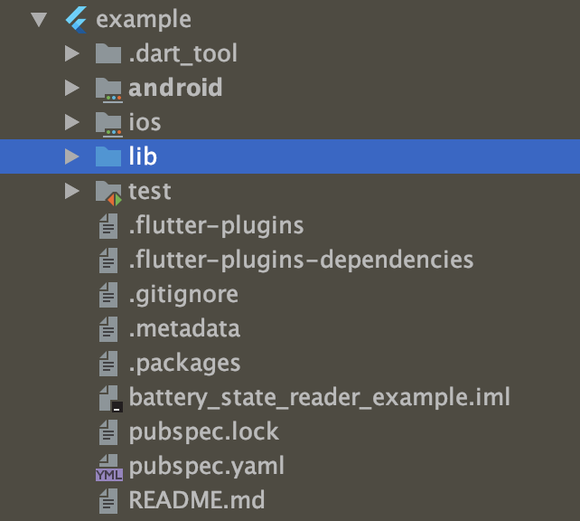lib/sampleBatteryStateReader.dart
class BatteryStateReader {
static const MethodChannel _channel =
const MethodChannel('battery_state_reader');
static Future<String> get batteryStatus async {
final String batteryStatus =
await _channel.invokeMethod('getBatteryStatus');
return batteryStatus;
}
static Future<int> get batteryPercentage async {
final int batteryPercentage =
await _channel.invokeMethod('getBatteryPercentage');
return batteryPercentage;
}
}
android/../BatteryStateReaderPlugin.kt
class BatteryStateReaderPlugin :
FlutterPlugin, MethodCallHandler {
private var applicationContext: Context? = null
private var batteryManager: BatteryManager? = null
private var methodChannel: MethodChannel? = null
override fun onAttachedToEngine(fpd: FlutterPluginBinding) {
onAttachedToEngine(
fpd.applicationContext,
fpd.binaryMessenger
)
}
private fun onAttachedToEngine(
applicationContext: Context,
messenger: BinaryMessenger
) {
this.applicationContext = applicationContext
val service = applicationContext.getSystemService(BATTERY_SERVICE)
batteryManager = service as BatteryManager
methodChannel = MethodChannel(messenger, "battery_state_reader")
methodChannel?.setMethodCallHandler(this)
}
android/../BatteryStateReaderPlugin.kt
private fun onAttachedToEngine(
applicationContext: Context,
messenger: BinaryMessenger
) {
this.applicationContext = applicationContext
val service =
applicationContext.getSystemService(BATTERY_SERVICE)
batteryManager = service as BatteryManager
methodChannel =
MethodChannel(messenger, "battery_state_reader")
methodChannel?.setMethodCallHandler(this)
}
companion object {
@JvmStatic
fun registerWith(registrar: Registrar) {
BatteryStateReaderPlugin().onAttachedToEngine(
registrar.context(),
registrar.messenger()
)
}
}
android/../BatteryStateReaderPlugin.kt
companion object {
@JvmStatic
fun registerWith(registrar: Registrar) {
BatteryStateReaderPlugin().onAttachedToEngine(
registrar.context(),
registrar.messenger()
)
}
}
override fun onDetachedFromEngine(fpd: FlutterPluginBinding) {
applicationContext = null
batteryManager = null
methodChannel?.setMethodCallHandler(null)
methodChannel = null
}
android/../BatteryStateReaderPlugin.kt
override fun onMethodCall(call: MethodCall, result: Result) {
when (call.method) {
"getBatteryPercentage" -> {
result.success(getBatteryPercentage())
}
"getBatteryStatus" -> {
result.success(getBatteryStatus())
}
else -> {
result.notImplemented()
}
}
}
private fun getBatteryPercentage() =
batteryManager?.getIntProperty(BATTERY_PROPERTY_CAPACITY) ?: -1
private fun getBatteryStatus() =
when (batteryManager?.getIntProperty(BATTERY_PROPERTY_STATUS)) {
BATTERY_STATUS_CHARGING -> "charging"
BATTERY_STATUS_DISCHARGING -> "discharging"
BATTERY_STATUS_FULL -> "full"
else -> "unknown"
}
android/../BatteryStateReaderPlugin.kt
private fun getBatteryPercentage() =
batteryManager?.getIntProperty(BATTERY_PROPERTY_CAPACITY)
?: -1
private fun getBatteryStatus() =
when (
batteryManager?.getIntProperty(BATTERY_PROPERTY_STATUS)) {
BATTERY_STATUS_CHARGING -> "charging"
BATTERY_STATUS_DISCHARGING -> "discharging"
BATTERY_STATUS_FULL -> "full"
else -> "unknown"
}
iOS/../SwiftBatteryStateReaderPlugin.swift
public class SwiftBatteryStateReaderPlugin:
NSObject, FlutterPlugin {
public static func register(
with registrar: FlutterPluginRegistrar) {
let methodChannel =
FlutterMethodChannel(
name: "battery_state_reader",
binaryMessenger: registrar.messenger())
let instance = SwiftBatteryStateReaderPlugin()
registrar.addMethodCallDelegate(
instance, channel: methodChannel)
}
public func handle(_ call: FlutterMethodCall,
result: @escaping FlutterResult) {
switch call.method {
case "getBatteryStatus":
result(getBatteryStatus())
break
case "getBatteryPercentage":
result(getBatteryLevel())
break
default:
result(FlutterMethodNotImplemented)
break
}
}
iOS/../SwiftBatteryStateReaderPlugin.swift
public func handle(_ call: FlutterMethodCall,
result: @escaping FlutterResult) {
switch call.method {
case "getBatteryStatus":
result(getBatteryStatus())
break
case "getBatteryPercentage":
result(getBatteryLevel())
break
default:
result(FlutterMethodNotImplemented)
break
}
func getMonitorableDevice() -> UIDevice{
let device = UIDevice.current
device.isBatteryMonitoringEnabled = true
return device
}
iOS/../SwiftBatteryStateReaderPlugin.swift
func getMonitorableDevice() -> UIDevice{
let device = UIDevice.current
device.isBatteryMonitoringEnabled = true
return device
}
func getBatteryLevel() -> Int {
var battteryLevel = getMonitorableDevice().batteryLevel
if (battteryLevel > 0){
battteryLevel = battteryLevel * 100
}
return Int(battteryLevel)
}
func getBatteryStatus() -> String{
var state: String
switch (getMonitorableDevice().batteryState) {
case .full:
state = "full"
break
iOS/../SwiftBatteryStateReaderPlugin.swift
func getBatteryStatus() -> String{
var state: String
switch (getMonitorableDevice().batteryState) {
case .full:
state = "full"
break
case .charging:
state = "charging"
break
case .unplugged:
state = "discharging"
break
default: state = "unknown"
}
return state
}
example/../main.dart
void main() => runApp(MyApp());
class MyApp extends StatefulWidget {
@override
_MyAppState createState() => _MyAppState();
}
example/../main.dart
class _MyAppState extends State<MyApp> {
int _batteryPercentage = -1;
String _batteryStatus = "unknown";
@override
void initState() {
super.initState();
initBatteryEntries();
}
Future<void> initBatteryEntries() async {
_batteryPercentage = await BatteryStateReader.batteryPercentage;
_batteryStatus = await BatteryStateReader.batteryStatus;
if (!mounted) return;
setState(() {});
}
example/../main.dart
Future<void> initBatteryEntries() async {
_batteryPercentage =
await BatteryStateReader.batteryPercentage;
_batteryStatus = await BatteryStateReader.batteryStatus;
if (!mounted) return;
setState(() {});
}
@override
Widget build(BuildContext context) {
return MaterialApp(
home: Scaffold(
appBar: AppBar(
title: const Text('BatteryStateReader example app'),
),
body: Center(
child: Text(
'$_batteryPercentage%\n\n'
'$_batteryStatus',
style: TextStyle(fontSize: 64),
textAlign: TextAlign.center,
),
),
),
);
}
example/../main.dart
@override
Widget build(BuildContext context) {
return MaterialApp(
home: Scaffold(
appBar: AppBar(
title: const Text('BatteryStateReader example app'),
),
body: Center(
child: Text('Battery percentage: $_batteryPercentage%\n'
'battery status: $_batteryStatus'),
),
),
);
}
Does this work?
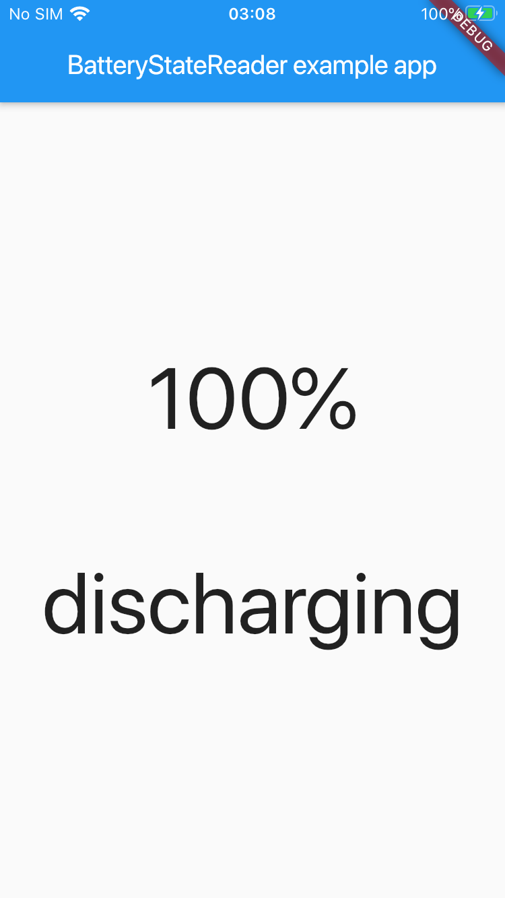
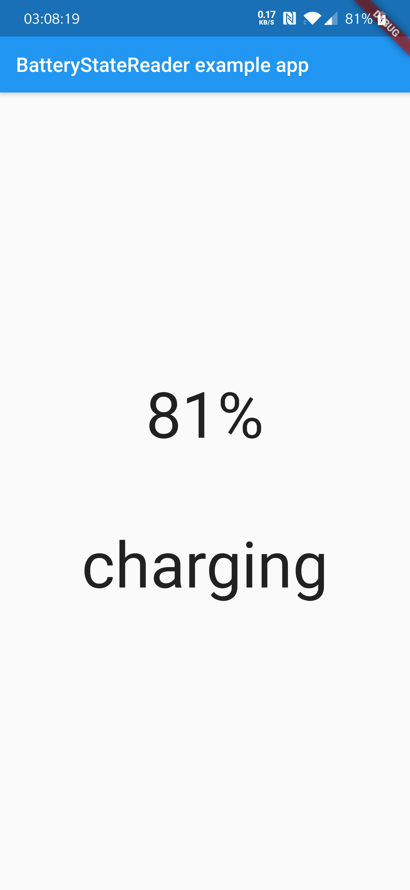
Should I pour more?
Maybe a stream?
Let's add stream support
EventChannel
Setting up listeners
What needs to be added?
battery_state_reader.dart
static Stream<String> get batteryStateChanged =>
EventChannel('battery_state_reader_event_channel')
.receiveBroadcastStream()
.map((dynamic event) => event);
android
class BatteryStateReaderPlugin : FlutterPlugin, MethodCallHandler,
EventChannel.StreamHandler {
private var applicationContext: Context? = null
private var batteryManager: BatteryManager? = null
private var methodChannel: MethodChannel? = null
private var eventChannel: EventChannel? = null
private var batteryStateReceiver: BroadcastReceiver? = null
android
private fun onAttachedToEngine(
applicationContext: Context,
messenger: BinaryMessenger
) {
this.applicationContext = applicationContext
val service = applicationContext.getSystemService(BATTERY_SERVICE)
batteryManager = service as BatteryManager
methodChannel = MethodChannel(messenger, "battery_state_reader")
methodChannel?.setMethodCallHandler(this)
eventChannel = EventChannel(
messenger,
"battery_state_reader_event_channel"
)
eventChannel?.setStreamHandler(this)
}
android
override fun onListen(
arguments: Any?,
events: EventSink?
) {
batteryStateReceiver =
createChargingStateChangeReceiver(events)
applicationContext?.registerReceiver(
batteryStateReceiver,
IntentFilter(Intent.ACTION_BATTERY_CHANGED)
)
}
override fun onCancel(arguments: Any?) {
applicationContext?.unregisterReceiver(batteryStateReceiver)
batteryStateReceiver = null
}
android
private fun createBatteryStateReceiver(events: EventSink?):
BroadcastReceiver {
return object : BroadcastReceiver() {
override fun onReceive(
context: Context?,
intent: Intent?
) {
events?.success(getBatteryStatus())
}
}
}
iOS
public static func register(
with registrar: FlutterPluginRegistrar) {
let methodChannel =
FlutterMethodChannel(
name: "battery_state_reader",
binaryMessenger: registrar.messenger())
let instance = SwiftBatteryStateReaderPlugin()
registrar.addMethodCallDelegate(
instance, channel: methodChannel)
let eventChannel =
FlutterEventChannel(
name: "battery_state_reader_event_channel",
binaryMessenger: registrar.messenger())
eventChannel.setStreamHandler(instance)
}
iOS
public func onListen(
withArguments arguments: Any?,
eventSink: @escaping FlutterEventSink) -> FlutterError? {
self.eventSink = eventSink
sendBatteryStateEvent()
NotificationCenter.default.addObserver(
self,
selector: #selector(handleBatteryStatusChange),
name: UIDevice.batteryStateDidChangeNotification,
object: nil)
return nil
}
iOS
private func sendBatteryStateEvent() {
guard let eventSink = eventSink else { return }
eventSink(getBatteryStatus())
}
@objc func handleBatteryStatusChange() {
sendBatteryStateEvent()
}
public func onCancel(
withArguments arguments: Any?) -> FlutterError? {
NotificationCenter.default.removeObserver(self)
eventSink = nil
return nil
}
example
Align(
alignment: Alignment.bottomCenter,
child: StreamBuilder(
stream: BatteryStateReader.batteryStateChanged,
builder: (context, state) {
Color batteryStateColor = Colors.red;
if (state.data == "charging" || state.data=="full")
batteryStateColor = Colors.green;
return Text(
state.data,
style: TextStyle(
fontSize: 64,
color: batteryStateColor,
),
);
}),
)
Result?
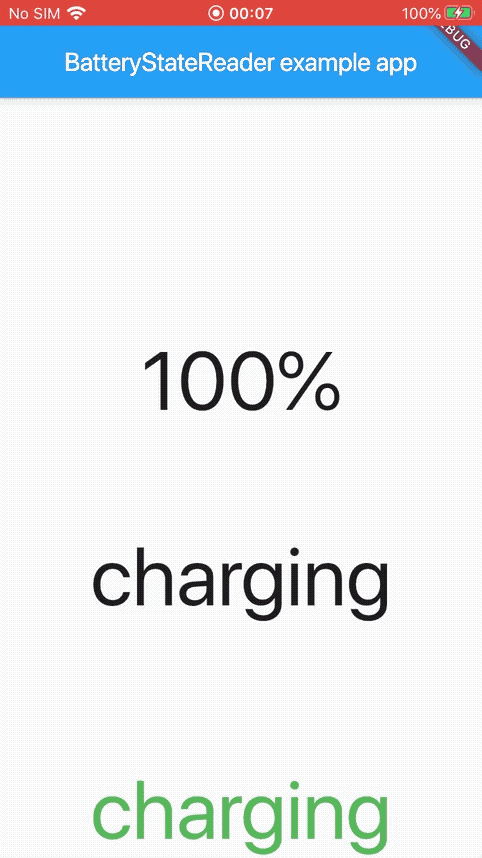 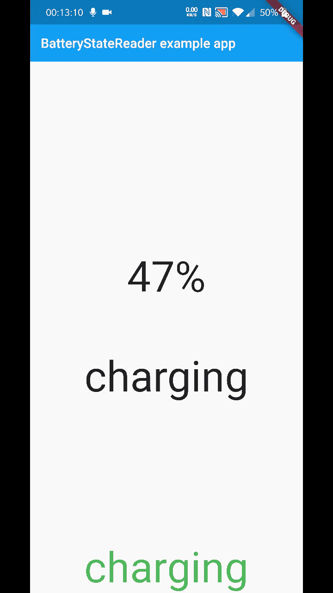Let's publish it
Steps
Push to github
run 'flutter packages pub publish —dry -run'
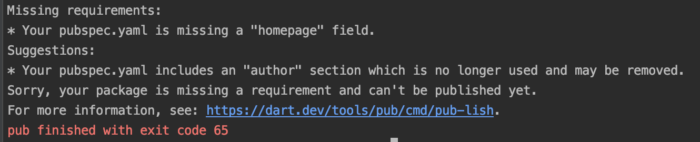Then
Fix all the warnings...
Until you'll see
Then
run 'flutter packages pub publish'
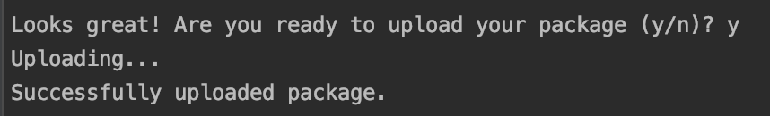Thank you!
jacqqq.github.io/in_mobile
https://pub.dev/packages/battery_state_reader